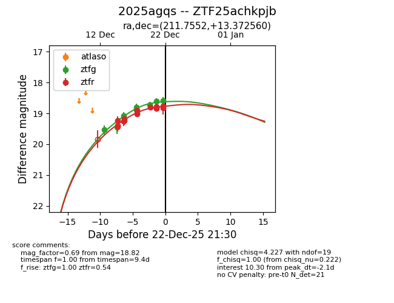
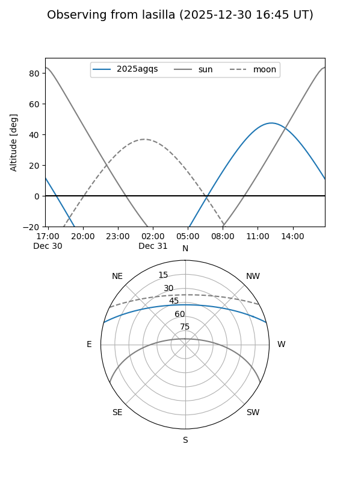
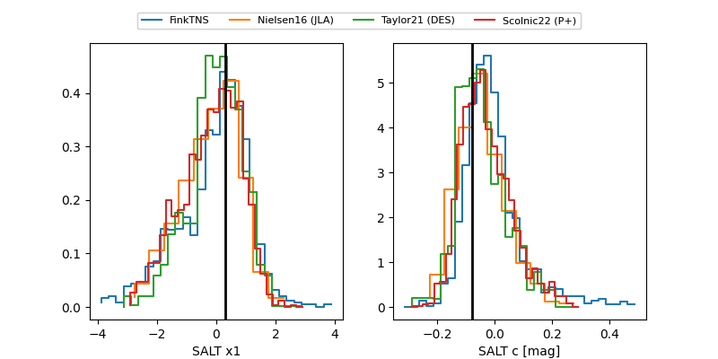

2025agqs
Target 2025agqs at 2025-12-18 14:37
Aliases and brokers:
FINK: fink-portal.org/ZTF25achkpjb
Lasair: lasair-ztf.lsst.ac.uk/objects/ZTF25achkpjb
ALeRCE: alerce.online/object/ZTF25achkpjb
TNS: wis-tns.org/object/2025agqs
YSE: ziggy.ucolick.org/yse/transient_detail/2025agqs
alt names
ZTF25achkpjb (ztf,fink_ztf)
2025agqs (tns,yse)
Coordinates:
equatorial (ra, dec) = 211.7552,+13.37256
equatorial (HMS+DMS) = 14:07:01.24,+13:22:21.21
galactic (l, b) = (358.7622,+67.61671)
Photometry
last ztfg=18.80, ztfr=19.24
4 ztfg, 5 ztfr detections
Lightcurve

Visibility


Additional plots
